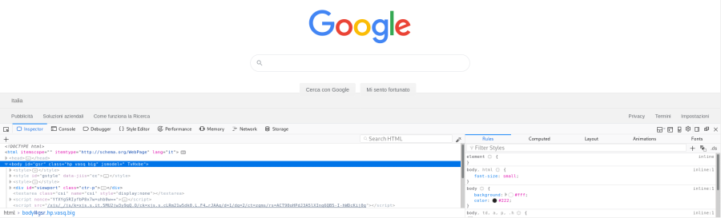
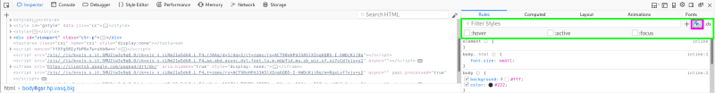
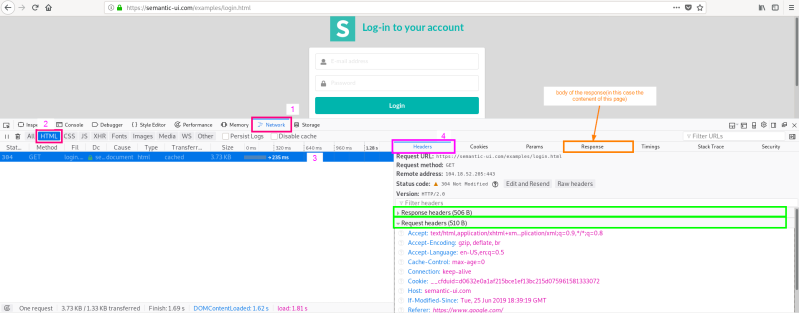
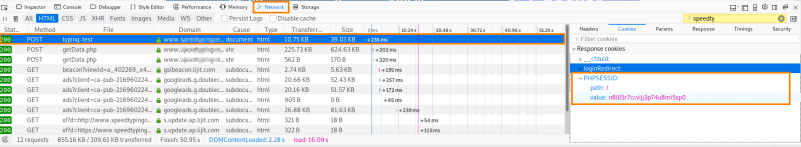
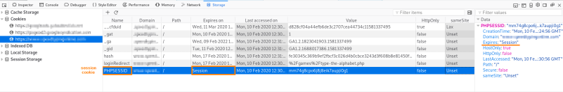
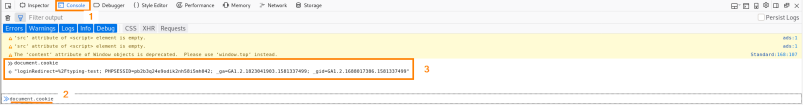
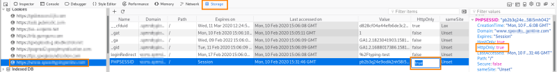
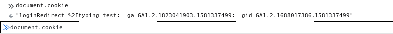

examination of cookies with Firefox
Settings → Web Developer → Toggle
Tools(Ctrl+Shift+i)
To analyze
web application Toggle Tools have different panels:
•
Inspector → Inspect and manipulate the
Document Object Model (DOM); DOM is the actual page loaded into the window of the browser, and is represented in
JavaScript.
◇
CSS: debug(inspect and manipulate)
CSS
 •
Console →
allow executing JavaScript commands and observe console messages
•
Debugger → debug(inspect
and manipulate) JavaScript code executed on a website
•
Network → analyze network
traffic
 withouth use wireshark we
can go to the Network panel and see the
cookie session ID parameter
given us by the server
 •
Storage → from here we can see
cookies and
session cookies  If the HttpOnly flag is not set like in this case is possible to to access
to this cookie also
via javascript in the console panel because the cookie is
stored in the document object model(DOM) we have to type “
document.cookie”
 if the the HttpOnly flag to true the cookie
will be no more accessible
via javascript  no more session cookie:

{kind=link}